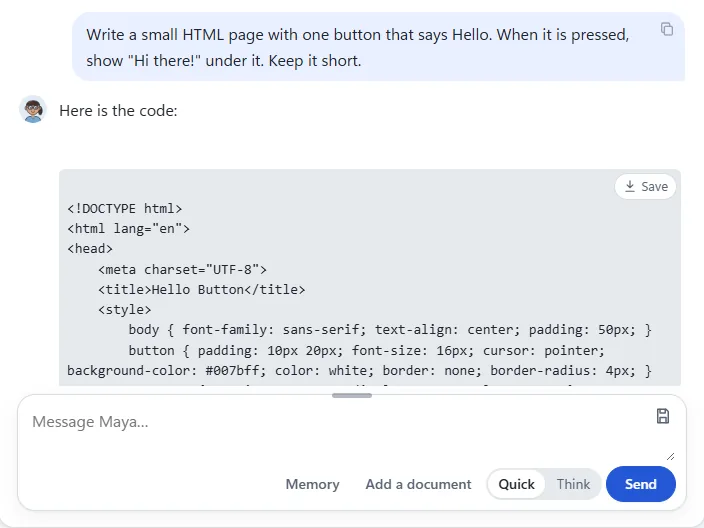

Chats and saving your work
Projects, Save on code, the whole chat, a chat's name, scratch pad, snippets and Send to.
Every chat is kept on this PC, so closing TOMLIN loses nothing that was finished. These keep the work where you can find it again.

- Projects: a chat belongs to a project. Pick it in the New chat window (it starts on the project of the chat you are in), or change it later with the Project list in the chat's top row; Default is no project. The Project tab on the right of the chat shows the chat's project: its name with Open project, then its chats by kind of work (Writing, Code, Pictures, Videos, Agents), each under the person it is with. Press one to open it, so you can go from the script to the video chat and back; the open chat is marked, and a short word says when one is answering, drawing, making a shot or waiting for you. + New chat in this project opens New chat with the project picked. A chat in Default (no project) says so, with Put this chat in a project. In a Videographer's chat the same list is in the Project fold under the shot list. Recent chats, on the left, lists chats under their projects, and See all opens All chats, with search and Project, Staff and Role filters. A project made in TOMLIN is a folder in your workspace, and the Bridge (Projects, in the left panel) shows every project folder; see Git.
- Save on a code block in an answer puts that code in a file in the Files folder (Replace when the file is there; the old one is kept as .bak): a chat in Default saves into its own chats folder (named with when it started), and putting the chat in a project moves those files into the project; in a project, a writer's work goes into its specialists\writer folder, named with the date and time.
- The whole chat: Save at the end of the chat's top row keeps it as a text file in its project's chats folder (a chat in Default: in its own chats folder), named with the date and time and the chat's name; Copy copies it. The copy icon in the top right corner of a message you sent copies it.
- A chat's name (its subject): a chat is named from your first message. Press the name in the chat's top row to rename it. Its messages (or an artist's pictures) stay in that chat.
- Scratch pad: notes kept as you type. Save note files it in the notes folder, or in a project's admin notes, named with the date and time.
- Snippets and prompts: Snippets (global) keeps prompts or notes to use again (Browse lists them all with Copy on each). The save icon in the corner of the message box (Save to prompts) keeps what is typed there, with a subject if you like. Scratch pad and Snippets are the same in every chat and no model reads them. The Bridge has its own Prompts page too, a tile per category.
- Send to… under an answer hands it on: the card shows the words (or only the part you picked in the answer) to change first, Copy, and "Write it as a prompt for…" (a picture prompt for an artist, a brief for the coder or the writer); Send opens that person's chat (or the subject you name) and sends it at once, loading their model first if it is not loaded. The blog writer's picture button opens the same card with the picture prompt it wrote, so you see it before it is drawn.
A chat's writing tone is in the chat's gear for the host, and in each hire's profile (Staff) for them. If the connection to a linked PC is lost while it answers, it finishes the answer and keeps it: Reconnect under the words so far collects it (it is also collected by itself once a minute).